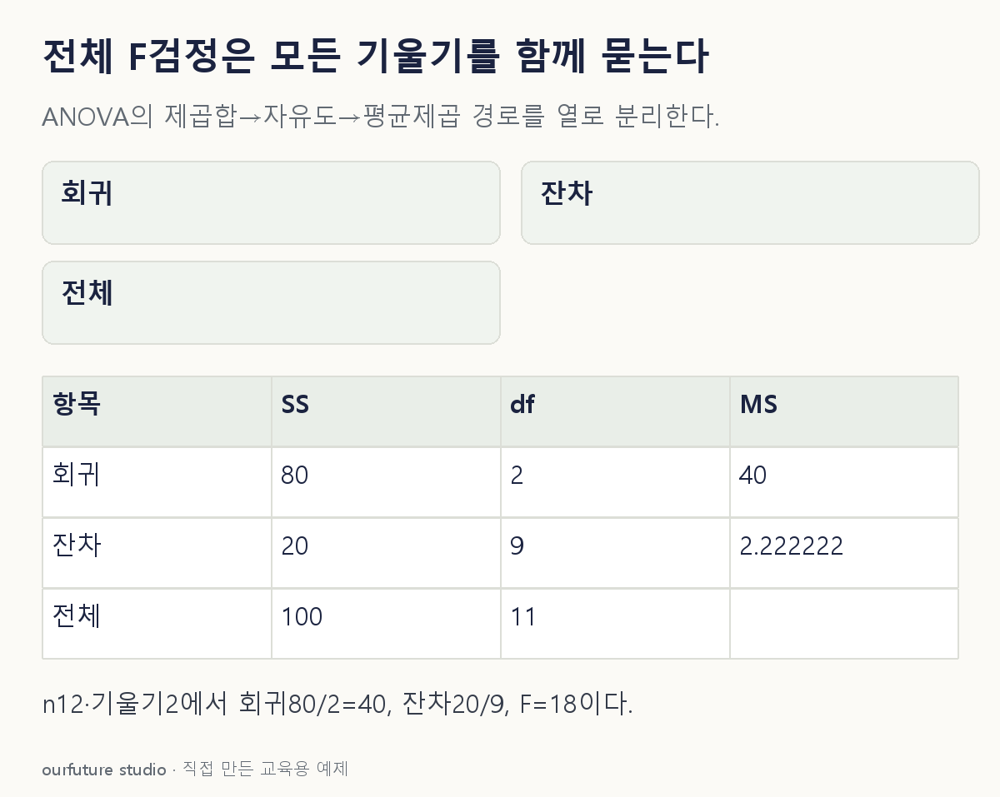

조건을 바꾸며 확인하기
절편 포함·완전열랭크·고전적 오차 조건의 별도 자체 요약이다. 입력 변경을 실제 재적합 결과로 표시하지 않는다.
설명 그림과 비교하기
아래 그림과 표는 고정된 설명 예제입니다. 기본·변형 중 어떤 조건인지 캡션을 읽고, 바꾼 입력의 결과는 계산 칸에서 확인하세요.

같은 문제를 직접 골라 보기
절편 포함 OLS에서 n=12, 설명변수 p=2, SSR=80, SSE=20이다. 완전계수와 독립 정규·등분산 오차의 고전적 전체 F 검정이다.
조건을 더 바꾸면?
별도 자체 요약에서 n=12·p=1·SSR=80·SSE=20이고 같은 고전적 조건을 둔다. F는 얼마이며 유의하면 모든 기울기 유의성과 관계는?
변형 풀이 확인
F=80/(20/10)=40이다. 이때는 기울기가 하나이므로 동일한 양측 t 검정과 F=t² 관계가 성립한다.
기울기가 여러 개인 원래 예제의 ‘적어도 하나’와, 기울기 하나만 공동으로 묻는 별도 예제를 구분한다. 다른 모형을 재적합한 실제 결과는 아니다.
제곱합이 아니라 평균제곱을 비교한다.